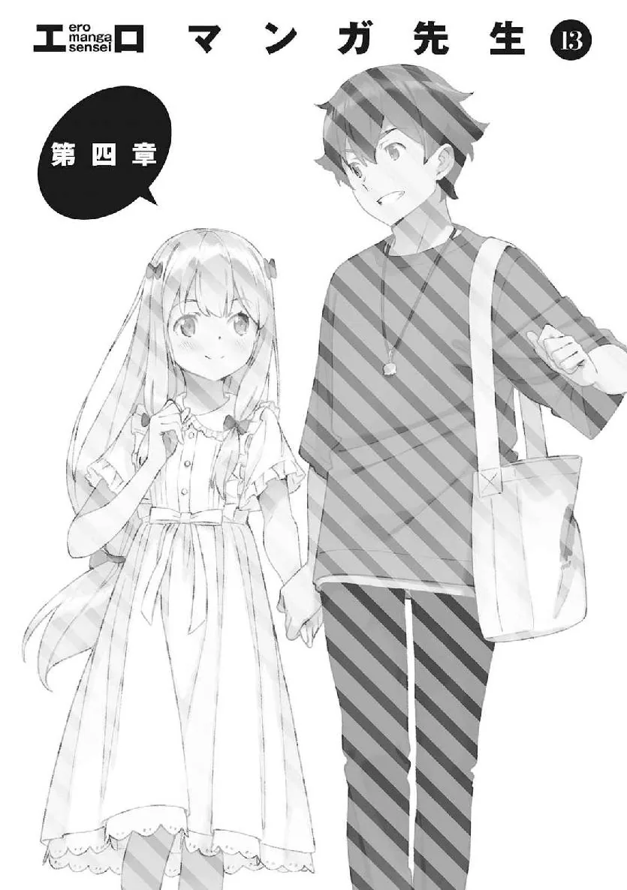
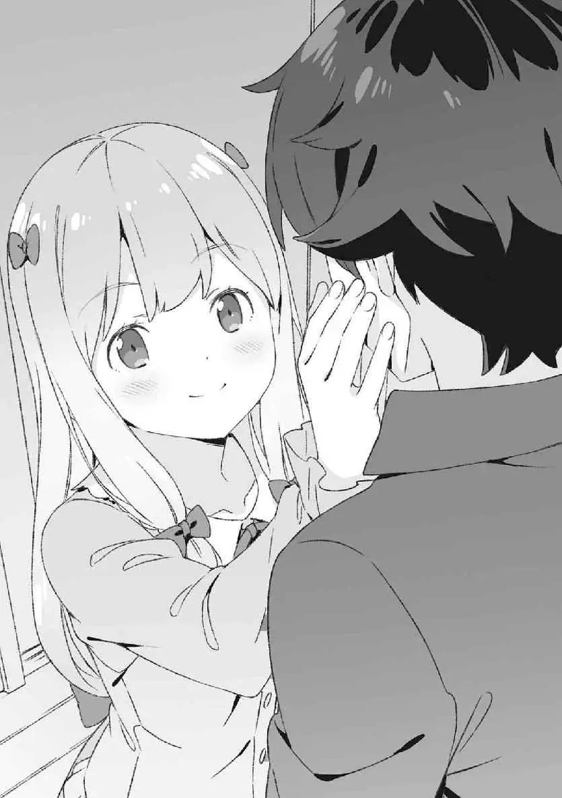
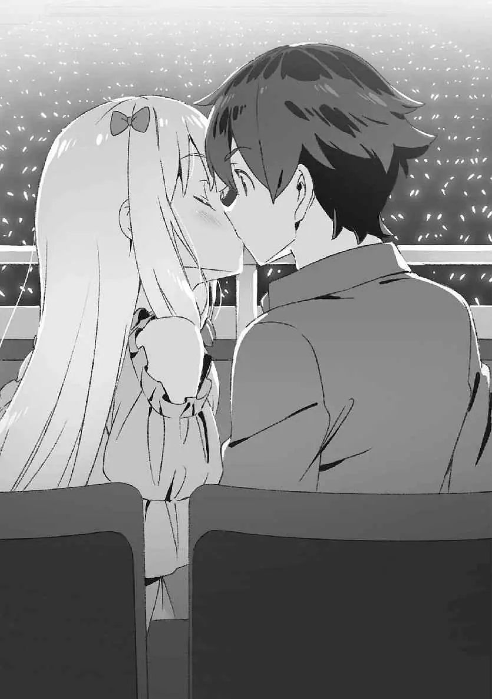
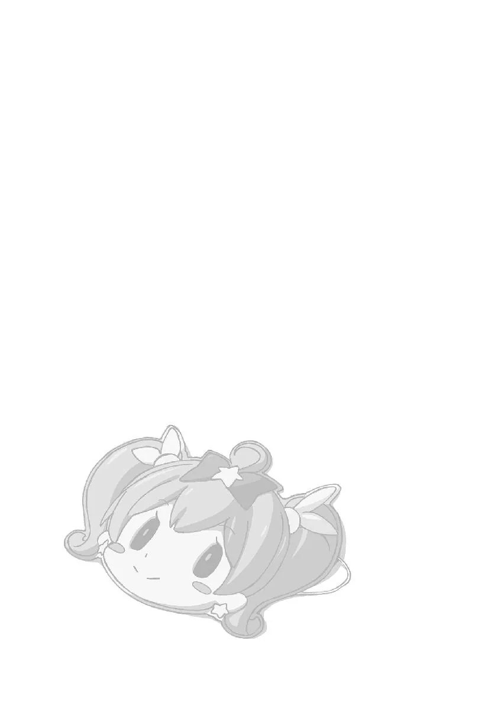
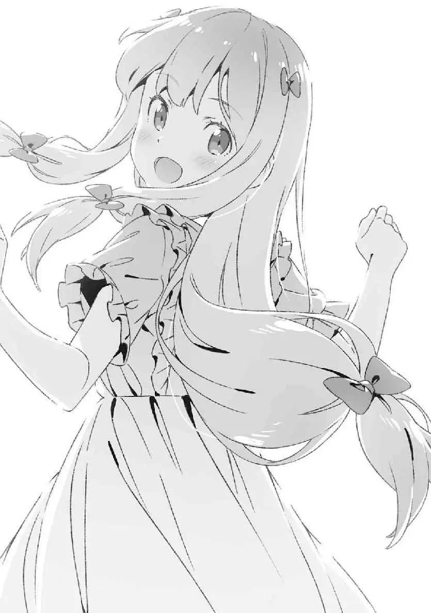

第四章
《世界妹》的动画开播了，新系列的第一卷也发售了，我们为父母扫完墓了。
实现梦想，追求更大的梦想，一帆风顺，无所畏惧。
——也许你会这么想。
但是，也有不顺利的时候。
工作日的早晨。在和泉家门前。
「纱雾酱！去上学啦~ ~～～～～～～～～～～！」
穿着制服的惠对着穿着睡衣的纱雾大声说。
纱雾则面带爽朗的笑容。
「今天不上学了！」
「今天~ ？『今天也不去』对吧~ ？这已经是连续三次请假了！哥哥，你也不要看了，说点什么吧！」
「哦、哦……好不容易惠来接你……那个……考虑一下上学怎么样？」
「知道了，我会考虑的。」
她深深地点头。闭上眼睛想了一会儿，得出的结论是——
「不要去学校！」
毫厘不差。
「嗯嗯是吗……那就没办法了。」
「大哥哥！？」
我瞬间放弃了，惠怒吼道。
「什么叫没办法啊~ ~ ~纱雾酱都能去学校了！哥哥总是对纱雾酱言听计从呢！」
「那是当然的吧？」
「不~要~放~弃~辩~解~啊！ 」
「呜呜……」
不过啊，惠。毕竟过去发生了那些事，和泉政宗不可能选择让纱雾做不想做的事。
另一方面，我也理解惠生气的心情。折腾了半天，终于解决了重要任务，就这样第一次上学，没撑到半天就早退了。
在学校方面提供便利的班长大人，也就是惠看来，「你在搞什么啊！」就变成这样了。
「实在对不起，我真心向你道歉，惠。」
「不不，我不是想让你道歉，我只是想问你为什么。」
惠一脸认真地说。
「为什么呢……」
「是的。纱雾为什么不去学校？」
「我也想知道。」
在开学典礼早退，一起去扫墓。
第二天，纱雾还有去上学。
「再休息一天比较好吧？」
面对如此担心的我，我心爱的妹妹怯懦地说道。
「因为昨天早退了，所以今天要努力到最后。」
我流着泪送走了纱雾。
纱雾是言出必行，坚持到最后才回来的。
然后，第二天早上。
「从今天开始我暂时不去学校了。」
纱雾突然说出了这样的话。当然，我焦急地问道。
「……在学校发生什么事了吗？被欺负啦，被讨厌的事啦。」
「不，不是的。大家都很温柔，关心我，还交到了朋友……我很开心。」
从她的微笑中看不出说谎的味道，可以看出是真心这么想的。
所以我更不明白了。
纱雾连续三天不去学校的原因。
之前一直没有问。因为我想先让她静一静。
不过，这是个好机会。
我轻飘飘地问道。
「纱雾，你为什么不去学校？」
「首先我想说的是……我并不是讨厌小惠和班上的同学。能和大家聊天……大家对我很亲切……我很高兴。」
「太好了。」
惠如释重负地点点头。然后温柔地问道：
「那是为什么？」
「我一直都是家里蹲……出不了房间……出不了家门……所以也不能去学校……对吧？」
「嗯。」
「终于可以出门了，终于可以上学了……我想起了『重要的心情』。」
「什、什么重要的心情？」
纱雾笑着回答。
「说起来……我在变成家里蹲之前，就讨厌上学了。」
「咦咦咦咦咦！」
惠仰面朝天。这是一种被纱雾的炸弹式发言直接击中的样子。
「你、你在说什么？纱雾酱！？」
「就算家里蹲的状况好转了，班上的同学也都很亲切，但还是讨厌上学，可以的话不太想去。」
「什么意思啊！在学校很开心吧？ ！」
「嗯，很开心。」
「那么！」
「可是我不喜欢，我不太想去。」
「？？？？？」
惠陷入一片混乱。
「对不起…………我一点也不明白……」
「明明说得这么清楚？」
「就是、就是！——纱雾，你不想去学校的理由，不是没有吗？我已经努力把那些因素都摧毁了！对吧？」
惠说出了对她来说「理所当然」的事情。
纱雾用有些欠扁的可爱动作摇了摇手指。
「小惠你一点都不明白，『因为有理由，所以不想去学校』的想法首先就不对。」
没法加入这个话题。真是个没出息的哥哥，对不起。
惠摇摆不定。我呆住了。
面对这样的我们，纱雾以一种超然的感觉，平静地说道。
「我只是不想去，这就足以构成不去上学的理由了。」
「我懂了……不，不太对吧！」
「为什么？」
攻守开始逆转了。不知不觉间，纱雾变成了追问理由的一方……。
「为什么……上学能交到朋友，能和朋友聊天……放学后还能玩……学习也很重要啊？」
「这些都不用去学校就能搞定，多亏了惠。」
对，现在的纱雾是……
即使不去学校，也能交到朋友，和朋友聊天，放学后一起玩耍，一起学习。不会被同学讨厌，也不会耽误学业。
——托惠的福。
你看，她现在还在和朋友说话——明明没去上学！
惠不知所措地抱着头。
「啊……我以为是帮助你的行动……却让纱雾你堕落了……？」
「不行啊，惠！你这种想法不好！别这样想！你做得很好……！我和纱雾都非常感谢你……！」
「嗯……请不要安慰我，哥哥……我没有资格当班长……我……我……连一个重要的朋友都拯救不了！」
「哥哥把人家弄哭了。」
「都是你的错吧！给我道歉！」
「我每周会去一次学校的，到时候请多关照。」
「交给我吧纱雾——不对！是每周休息六天吗？ ！」
「我在工作，一周七天，也可以说我很努力。」
「嗯……这个嘛……是啊。我觉得纱雾你很努力……可能比学校里的任何人都要努力。但是，嗯…………要怎么对班上的同学说……」
「告诉大家，今天放学后大家一起玩。」
「……学校都不上了，你还和大家一起玩吗？」
「嗯，不行吗？」
「……其实纱雾是个很彻头彻尾的不良学生。」
还会扯下朋友的内裤。
明明一副可爱的样子，思想和行为却都很恶劣的不良学生。
我的责任很大，我自己也没好到哪去，所以什么都不能说。
被人指责也没办法，但我一定会让她幸福的，请原谅我。
「我知道了……交给我吧！放学后，大家一起去找纱雾玩！」
惠轻松地笑了。
「不过呢~ ？做好心理准备吧！将来我一定会让你说想一周五天上学的～～～～～～～～！」
惠丢下这句台词后，精神抖擞地跑远了。
慈雨过后，吹走湿气，留下太阳和彩虹。
用灿烂的笑容，温暖人们的心。
神野惠就是这样的少女。
「再见，小惠！」
她是我和纱雾引以为豪的朋友。
动画《世界妹》第二话的放送迫近的某天。
在纱雾的房间里工作的时候，真希奈给我打电话了。
「喂，正宗老师，好久不见——」
「哈哈，有那么久吗？」
「啊，真是薄情啊，很久了耶——上次的聚会我也没能去。」
作为脚本家的葵真希奈老师不参加录制等工作。所以，她和我上次见面，还是完成最终话脚本时。
第一集播出的第二天，大家为我们兄妹举行了庆祝派对。那天，本来应该把真希奈也叫来的，但是因为她感冒了没能见面。
「感冒好了吗？」
「就是因为这个，症状拖了好久，现在正在住院。」
「哎哎哎！你没事吧？」
别说得这么简单，这么重大的事！
「没事没事，已经好了，今天出院。」
「那就好，可是……」
让人心急如焚。动画播放中收到熟人的讣告之类的，真的很恐怖。
她平时就不节制，又一个人住，真的很可怕。
对我们来说……不，对所有的宅男来说，她都是不能失去的人。
发出发自内心的声音。
「真的，请你保重身体。」
「哎哟，对了，我有件事想跟正宗商量一下。」
「什么事？」
不会是叫我去探病的吧。她今天就要出院了。
「明天来我家玩吗？虽然有一点，就一点点……乱。」
真是厚颜无耻……她的要求太明显了。
我想了想，回答道。
「今天出院是吧？如果可以的话，我现在就去吧。我不想让刚痊愈的人睡在脏乱的房间里。」
「你太懂我了，呜呜呜，正宗，嫁给我吧～～～～～～～♡。」
「我不要。」
「呜呜呜，被甩了。——既然是这样，那就谢谢你了，我就向你撒个娇吧。见面后再跟我聊聊你和纱雾小姐的恋爱故事。」
「好的好的，我几点去比较好呢？」
「那你在我回去之前把房间打扫干净。」
虽然是我提议的，但还真理直气壮。有种任性大小姐的感觉。
「我又没钥匙。」
「赤P有，找她带你去吧。」
「啊？赤……谁？」
我的问题没有得到回答，随着「麻烦你喽」的声音，电话挂断了。
事到如今，还是复习一下吧。
刚才打电话来的那个极其随便的人，正是之前大家都认识的脚本家葵真希奈老师。
年龄不详的社长千金。戴着大眼镜，身材稍显丰满的女性。
这是制作超有名动画《星尘⭐小魔女梅露露》的厉害的家伙。
懒到要用三个「超」字形容，执笔速度参差不齐，还有经常拖稿的坏习惯，是个有缺陷的脚本家。
我突然决定去她的家。一放下电话，正在旁边工作的埃罗芒阿老师就开口了。
「谁打来的？」
「真希奈，因为感冒住院了，今天出院。」
我说明了电话内容。
「——所以，我去一下，晚饭前就回来。」
「啊？我也要去！」
「工作呢？」
「今天的份做完了。」
「那我们一起去吧。」
事情就是这样。
这家伙，改掉家里蹲的毛病后，变得很爱出门。
这是好迹象。多多出门吧。
「坐电车去吗？」
「不，说是『赤P』要来接我……」
「……谁？」
「这个嘛……」
也没人跟我解释。和一个陌生人在一起，不知道纱雾会不会有什么问题。实在不行的话，还是我一个人去吧。
正想着这些，门铃响了。
从二楼的窗户往外看，一辆黑色的高级轿车停在那里。
里面出现了一个和车子一样全身漆黑的女人。
是熟悉的人。
我叹了口气，对着纱雾苦笑。
「『赤P』是指赤坂制作人吗……」
赤坂透子——赤坂P。
担任动画片《世界妹》制片人的她，穿着平常的西装裤，恭恭敬敬地低下头。
「和泉老师，我来接您了。」
「谢谢。……真是不好意思。」
「不不不，我本来也打算去问问『那篇原稿』的进展，倒不如说道歉的是我们。让你又卷入了放荡千金的任性之中……实在抱歉。」
「不不不，没有那种事。」
赔礼道歉的战争持续了一段时间。
赤坂P和真希奈是旧识，似乎是会「代为道歉」的关系。
真希奈家好像超有钱的，我只能推测就是了。
「和泉老师，那位小姐是……」
赤坂P的表情微微动了动，看着纱雾。
这么说来，还没有直接见过面呢。
「我来介绍一下——这位就是埃罗芒阿老师。」
「……初次见面。」
纱雾行了一礼。也许是因为完全没有被当作小孩子对待，她也没有注意到我是用笔名介绍她的，有点高兴了，真可爱。
「初次见面，我叫赤坂透子。」
………………………………………………………………。
………………………………。
「那么，我们出发吧。」
虽然不如雨宫导演……。
这两人凑到一起气氛还真干。
真希奈住的公寓位于东京都内的黄金地段。以前也和赤坂P两个人来过这里。带着说服真希奈工作的使命。
结果，真希奈被我们兄妹的「梦想」和「处境」刺激了创作欲望，在附加条件下鼓起了干劲。
条件是——和我们兄妹一起生活。
这就是……那喧闹的同居生活的原因。
现在，这次是和纱雾一起——再度来到了她的公寓。
乘电梯上到41楼，站在拐角的房间前面。持有备用钥匙的赤坂P打开了玄关的门。我转向旁边的纱雾，松开了牵在一起的手。
「纱雾，能在这里等我一会儿吗？」
「为什么？」
「……那个……」
我犹豫了一下，反正进去了就知道了。
「……里面大概是垃圾山吧。我想让打扫一下最基本的卫生再让你进去。」
「我能看一下里面吗？」
纱雾也不等我回答，就从玄关门往里看。但是，
「哇……」
光凭这个反应，就能想象出里面的样子了吧。果然不出所料，真希奈家又回到了以前的垃圾屋。
「哈霍霍霍……这什么啊。」
满是灰尘的纸箱占据了走廊的一半。
……这就是社长小姐的房间吗？真是太糟糕了。那个人明明是个美女，真是百年之恋都会冷却的惨状。
我从背包里拿出单独包装的无纺布口罩和三角巾。
「纱雾，戴上口罩，在外面等我。」
「我也要打扫，我就是为了帮忙才来的。」
纱雾说着，戴上口罩和三角巾。与运动裤搭配，就完成了一套纱雾的罕见的清洁套装。一只手拿着从家里带来的蓝色水桶，露出做好觉悟的表情。
「真是的。」
即使是这种时候，纱雾也会让我心动。
我早就料到她会这么说。无奈地叹了口气。
「知道了，一起收拾吧。这可是和我们家的扫除大不相同的强敌，打起精神来。绝对不能徒手摸东西。就当作是被瘴气污染的迷宫吧！」
「嗯。」
「我明白了。和泉老师，请您指示。」
就这样，我们为了即将回来的真希奈，开始了对脏乱房间的大扫除。
两个小时后——。
「嗯……暂时先这样吧。」
「变得好干净。」
真希奈家焕然一新。因为垃圾不能马上扔掉，所以全部集中在一边。总算夺回了生活的空间。
「在垃圾堆里翻到内裤，我一点也不高兴……就算戴着口罩也很臭……」
我会把实际存在的人物作为角色的原型，但真希奈小姐是不可能的。
她被取消女主人公资格了。
可以想见编辑逼问「为什么要给加上『很臭』这样的负面因素呢？」的未来。
她搞不好会骂我「《魔○公主》小说化的时候，会写臭味吗？不会吧？」还是放弃比较明智……不，是比较安全。
「……您辛苦了，埃罗芒阿老师。」
就连赤坂P也一脸抱歉。
「……除、除了发邮件联络的时候，请叫我本名。」
她没有说出平时的口头禅，只是用几乎要消失的声音喃喃自语。
「我知道了，和泉……纱雾老师。哦，葵老师她们马上就要到了。」
「她们？」
真希奈的家人……之类的吧？
这个疑问很快就消除了。
「我回来了！」
几分钟后，大病初愈的真希奈元气满满地回来了，她带来了一个熟悉的人。不，应该说是认识的人吧——
「啊……你是……」
「政宗老师~♡又见到你了~♪」
是这个故事的终极大boss。
虽然年纪比自己大，但看起来就像比自己小的初高中生，这个美少女就是月见里愿舞老师。
是连载《阳光吸血鬼》的超人气漫画家。
这部漫画的动画正在播放中。
也就是说，是和我立场非常接近的原作者。
月见里愿舞老师和葵真希奈老师是竞争对手……是宿敌的关系。
该怎么说呢……她们非常——
关系不好，关系又很好。意思马上就明白了吧。
面对不知为何结伴而归的宿敌，我当然会这样问。
「月见里小姐，那个……为什么和真希奈一起？」
「她让我来接她。她好像和家人很疏远？虽然是我讨厌的人，但我也不能抛弃她。」
月见里老师一边用指尖转动着车钥匙，一边说:
「所以我开车的时候顺便载她一程。」
「路上到处炫耀新车，超烦的。忙碌的漫画家老师朋友很少，没办法啊。」
「喂喂，真希奈。喂，你对恩人的感谢不够吧？啊，真是的……所以说γ - GTP高的阿姨就是让人头痛。」
「恶——性格真差劲。正因为这样，你才找不到愿意和你一起开车兜风的男朋友。」
「你说这个是想开启战争吧！」
她们叽叽喳喳地说着。
这两人已经称得上挚友了吧。
根本看不出是宿敌。
不过，我知道月见里小姐一起来的理由了。
我带着她们两人从玄关走向室内。在这个过程中——
「哦，变得亮堂堂的！」
真希奈一眼望向室内，大声喊道。
「你还是老样子，神啊！正宗。怎么样，没有男朋友的你好羡慕吧？」
「政宗不是真希奈的男朋友吧！」
「你是这么想的吗？」
「啊！难、难、难道说……」
被抢先一步了吗！？月见里小姐一脸不安，我用冷淡的声音说。
「我们没有交往，我和真希奈没有任何关系。」
「你看，不是这样的！真希奈，别说这种让人误会的话！在车上，我们不是说好了不会交男朋友吗！」
这两人订下了好可怕的约定。
遵不遵守都是地狱啊。
因为觉得害怕，所以换个话题吧。
「对了，我想介绍一个人给月见里老师。」
「什么？」「谁？」
两个人兴致勃勃地走近。我没有马上回答，而是打开了通往起居室的门。
那里有赤坂P和另一个人的身影。
「埃罗芒阿老师和泉纱雾，我的女朋友。」
「初、初次见面！」
突然被甩了话题，纱雾却认真应对。
她紧张地低下了头。
「哦，你就是传说中的那个……彼此彼此，初次见面！我是月见里愿舞♪」
「纱雾！好久不见！虽然一直有听说过，但你真的可以出门了！」
「听说小真希奈住院了，我很担心……不过你看起来很健康，真好。」
「精神抖擞，不用担心！呵呵呵，工作结束后的解放感就是不一样！」
真希奈摆出握拳的姿势，仿佛要展示她的两只手臂。
这时，月见里老师目瞪口呆地吐槽道。
「享受解放感是好事，可要是光着身子喝酒感冒了可就麻烦了。」
「能不能不要暴露少女的秘密？」
她住院的原因也太荒唐了。
「不管经过如何！既然大家都到齐了！」
真希奈一把我们迎进客厅，就像要逃避这个不方便的话题般，大声说道。
「马上就『那件事』商量一下吧！」
「那件事？」
「那当然是我们的『最终决战』了。在同一时间播出动画的两个人，第一集的反响不相上下的两个人，来个决一死战吧……」
「对了，以前我们三个人也谈过这件事。」
我一边回想当时的情形一边说。
动画还没完成的时候，脚本会议刚结束的时候……
我曾被真希奈小姐引见过月见里小姐。
那时，作为动画原作者的大前辈月见里愿舞老师给了我宝贵的建议。
——我最讨厌动画片了！
——但正因为如此，如果做了就要赢。
她向我们宣战，我接受了。
当然，和同期播放的其他动画，即使是竞争对手，也不是敌对关系。既不是在打仗，也不像体育比赛那样直接对决。
但是，我是这样认识跨越了自己所面对的「人生最大的祭典」前方的她——月见里愿舞老师的。
最后的敌人。
我觉得没有错。
我认识她，很尊敬她，比我有名得多，算是有渊源——虽然是间接关系——的人。
如果这个祭典落幕的时候，有战胜了她的实感的话。
就代表我们的梦想是「完美大成功」。
可以骄傲地挺起胸膛了吧。
相反，如果输给了她。
即使梦想已经实现了，即使达成了最大的目标，也会留下不甘心的心情。
虽然形容为最后的敌人，但月见里愿舞老师对我和埃罗芒阿老师来说——
通关后的隐藏boss。
也许就是这样的存在。
「可是真希奈。你说要做个了断——是什么意思？这种情况下的胜败，是在一切都结束之后，由自己心中来判断的……」
创作者所说的「胜负」，大多是这个意思。
本来就不可能像我们这样「在与敌人达成共识的基础上进行创作较量」。甚至很难设定明确的胜败条件。
搞了这么多次创作比赛的我说这话，没什么说服力就是了。
「不行不行！这样不行啊正宗！胜败条件太模糊了~~『因为都是好动画，所以都是胜利！』这样的事情很可能发生！」
「呃，这有什么不好吗？」
双方均获胜，没有失败者。
不是好事吗？
听到我的问题，真希奈指着月见里小姐的脸说:
「胜败不明确的话，我怎么能嘲笑她玩呢！」
「哇……小真希奈，完全没有隐藏恶意。」
纱雾一脸惊讶地半睁着眼睛。真希奈完全没有胆怯，反而气势更强了。
「你一定要想起来！我本来就是因为想做这件事才接受这份工作的！」
「……是啊。」
当时，激发真希奈干劲的，是我们兄妹的恋爱故事，以及宿敌的讯息。提不起劲的真希奈被月见里小姐煽动，勃然大怒，站了起来。
说要把她打得落花流水。
「事到如今……我想那应该是月见里小姐为了复活朋友真希奈而做的。」
「「才不是~~」」
真希奈和月见里小姐齐声否定。
果然是好朋友吧。
「既然你都这么说了，葵老师。」
赤坂P一脸无奈地推进话题。
「有什么方法能让胜负一目了然？」
同一时期播放的两部动画。
谁输谁赢。
能做出决定吗？
真希奈这样说道。
「通常不可能将两部已经发布的商业作品，分出「每个人都认可的输赢」。 不管品质、销量差距有多大，都绝对不可能办到。」
是吧。
我们并不是为了比赛对决而创作的。
轻小说也好，漫画也好，动画也好，都不是为了打倒敌人而创造出来的。
这不是争论的武器。要忘记这个前提──
「喂，真希奈~ ？真希奈老师~ ？你啊，在《星尘⭐小魔女梅露露》和《maschera》的时候，以数字为依据宣布胜利，疯狂嘲讽我吧？刚才那段话是怎样~ ？」
「那是因为，虽然我取得了压倒性的胜利，但是那个叫月见里愿舞的作者直到最后都不认输，所以改变了想法。」
「哇！我生气了！实际上我并没有输！原作的人气一下子就上升了！」
——会引发丑陋的创作者之间的斗争。
就是这么严重。
谁的BD卖得更好——等等。有没有下一部作品——等等。
播放次数——等等。收视率——等等。原作销售额增加了多少──等等。
比较的尺度有很多，但肯定会有人不认可这种比较方式。「对我来说，我赢了！」总有人会挺起胸膛说。
因此，世间无数的「粉丝之间的斗争」白热化，长期化，不会彻底分出胜负。
无法分出能得到所有人认可的胜败。就是这样，没有好坏之分。
「那么，葵老师，你打算怎么办？」
「由现在在这里的人来决定吧。」
只能这样了，她笑了。
「在这里的大家一起，在同一个地方，互相看对方的动画，互相发表感想，讨论到满意为止。好好地分出胜负吧。」
「能决定吗？」
面对这轻飘飘的问题，我说出了心里话。
「我觉得我们自己心里决定就好了。」
和最后的敌人的胜负，由我和纱雾来决定就好了。
不会被其他尺度所左右。这是我的意见。
「不过，增加判断材料是欢迎的。大家一起看动画，一决胜负——不是很有趣吗？对吧，埃罗芒阿老师？」
「我、我不会再害羞了！」
我用笔名叫纱雾的理由……好像终于被她看穿了。
但是。我用笔名称呼你，不仅仅是因为想看你害羞的样子。也是为了称呼作为职业创作者的纱雾。
也许是明白了我的意思，她鼓起脸颊点了点头。
「比赛,我觉得也很好」
「嗯。」
这里统一了意见。
「来吧，真希奈小姐。」
「不愧是正宗and纱雾大人，真配合！你那边怎么办？」
「当然可以。我不是说过吗？『既然要做，就一定要赢』。」
月见里小姐露出可爱的犬齿笑着。
一定是这个。
这将是我们故事最后的创作比赛。
虽然我讲得很帅气，但如果期待像战斗轻小说那样精彩的战斗，那就麻烦了。
放出光束，使出剑击，这种事在这里谁也做不到。
既然如此，亲眼看看会是怎样的战斗比较快。
——《世界上最可爱的妹妹》VS《阳光吸血鬼》。
第一集已经播出，反响势均力敌。
决定一决胜负的当天，在真希奈家，全体人员再次观看了第一话——
「我~就~说~『阳光吸血鬼』更有趣呢！气势磅礴的战斗！精心设计的超帅设定！吸引观众的爱情故事！胜利了！这期绝对是霸权！」
「三十岁了还得了中二病，饶了我吧。」
「我才不是三十岁！别说和作品无关的话！」
「那就说说作品吧，《世界妹》的第一集比较好。特别是这个……把原作的优点发挥出来的精妙脚本？脚本家是不是太天才了？虽然是我写的！」
「……自卖自夸的大婶。」
「我们年龄差不多啊！」
顺便一提，双方都已经动手了。
啪嚓、啪嚓，发出泄气的声音。
和动画大不相同的是，你来我往重拳交错的最终决战。
因为争执得太过丑陋，我、纱雾和赤坂P都没能参加。
我们的故事。这就是最后一战吗？
这可怎么办啊……。
「你感冒才刚好，能不能稍微冷静点看？」
「正宗！可是！」
真希奈用根本不像年长的态度折磨着自己。
这时月见里小姐也转向这边。
「政宗你们是怎么想的！《阳光吸血鬼》和《世界妹》，哪个更有趣？ ！」
「「世界妹。」」
我和纱雾的声音交织在一起。
月见里小姐用可爱的声音捶胸顿足。
「哎呀，原作者对自己的作品偏心太过了～～～～～～～～～～」
「我可是原作者啊。」
「我可是插画家嘛。」
给自己制作的动画最高评价是理所当然的事情。
给自己的作品打满分以外的分数，等自己一个人反省的时候再说。
否则的话，对粉丝和相关人员都很失礼。
「「对吧？」」
月见里老师看着默契十足的我们，「啊」地叹了口气，然后苦笑起来。
「是吗？我也没资格说别人。」
「哈哈……照这样看来，果然还是没有结果。」
可以是收视率和各种销售额的准确数据，可以是今后的商业发展，也可以是观众的反响。
关于动画，原作者处于比其他观众能得到更多信息的立场。
但即便如此，原作者之间就能分出胜负吗？
比粉丝之间吵架更严重。只会变成丑陋的对骂和斗殴。
即使是这样的我，就算不是真希奈率先战斗的话，我也一定会生气地吃掉月见里小姐的。
如果，假设……如果把「正在播放的动画」的原作者召集起来，在镜头关闭的情况下进行讨论的话，一定会出现类似的情况。
跟「决定谁的孩子最优秀！」是一样的。
提出这样的题目的瞬间，所有的原作者都变成了怪物家长。
一定是全体人员都认真起来。甚至可能引发流血事件。
所以……我觉得这场比赛不会有结果。
我转达了我的意见，月见里老师苦笑着说。
「不做个了断也没关系吧？」
「真意外啊。我一直以为月见里小姐和真希奈小姐的心情是一样的。」
「嘻嘻，我啊，这场比赛，包括今天在内，我觉得还不错——你觉得呢？」
「我……」
让我看到丑陋的争斗。
怎么也不觉得会以漂亮的形式结束。
一不留神，连我都要加入这场丑陋的争斗了。
作为最终决战却如此可笑。不过——
「我觉得还不错。」
「是啊。」
我们的终极boss露出可爱的笑容。
她说，比起胜负本身，这段时间才是最重要的。
我深有同感。
这种心情，怎样表达才能传达给对方呢？
在动画播放期间，我一直心神不定，坐立不安，兴奋不已，七上八下——。
无法忍受的心情。
纱雾、曾经的妖精、和我立场相似的原作者们一定也是如此吧。
害怕，享受，不安，快乐。
能够跟我们兄妹共享这种五味杂陈想法的，一定只有眼前这位最后的敌人。
或是众多的原作者（劲敌）们。
「那边的原作者们！不要随随便便就把关系搞得很好，随随便便就分出胜负！」
当然也有人持不同意见。
「真希奈，就算你这么说……这样下去也不会有结果的。」
「这个行为重复十二集，也还是一样。」
纱雾和月见里小姐反驳真希奈。
一起收看，一起讨论决定胜负。
这种做法是无法解决问题的。
那么该怎么做呢？
「唔唔唔……」
呻吟着的真希奈以猛烈的气势站了起来。
「这是最后的手段了！」
好战地吠叫着。
「祭典啊祭典！用祭典来决胜负！」
「说到祭典，是指动画大结局几个月后举办的『世界上最可爱的妹妹祭典』吗？」
赤坂P提出了一个非常简单易懂的问题。
真希奈点点头说:
「对，就是这个！正宗你们也听说了吧？」
「当然了。对吧？纱雾？」
「嗯。那个……是一个很大的会场……会召集很多粉丝……演唱主题歌和角色，还有声优们会做脱口秀。」
「然后活动的最后，是由我撰写脚本的特别舞台剧！」
「制作『世界妹』的原创故事，做特别的舞台剧对吧？我非常期待！」
虽然现在还不能透露，但预定会成为非常厉害的作品，我将担任故事监修。
舞台剧脚本什么的，我不专业。打算交给经验丰富的本职——葵真希奈老师。
究竟会是怎样的故事呢？作为原作者和一名粉丝，我都很期待。
埃罗芒阿老师也要负责活动的形象插画，每天都很开心地工作着……不去学校上课。
「包在我身上，雾纱大人！我会让你看到有史以来最棒的动画盛会！」
噢……真希奈在燃烧……！
真是干劲十足。
变成这样的真希奈是靠得住的。动画的品质就是最好的证明。
言出必行，一定会写出精彩的舞台剧脚本吧。
真是太兴奋了。但是，也有不明白的事。
「月见里小姐的比赛和『世界妹祭典』有什么关系？」
「呵呵，这个问题真不错啊，月见里愿舞老师，请你替我回答。」
「是吗？嗯，『阳光吸血鬼』也计划在同一时期举办祭典活动。我猜，是想靠祭典的反响一决胜负吧？」
「没错，在最终回之前决定胜负再好不过了。办不到的话，就在祭典上进行延长赛。——怎么样？」
真希奈笑着对宿敌说。
与之相对的月见里老师做出了沉思的动作。
「嗯……《阳光吸血鬼》会上演由原作者编剧的音乐剧吧。前作已经有了漂亮的成绩，世界观也很适合改编音乐剧，大家都说一定要我接受这个提案。」
「我知道，然后呢？」
「我肯定会赢的，不过，你要来比也没关系。」
「什么……你……我……」
真希奈……气得说不出话来。
她额头上青筋突出，一副快要气死的样子。
她终于发出了颤抖的声音。
「咳、咳～～～～……你好像很有自信嘛。」
「说实话，这个条件对我来说相当有利。舞台剧的脚本，我和漫画一样擅长。」
好可怕……人气漫画家说「我和漫画一样擅长」。
不过，月见里愿舞老师作品的音乐剧，连我都听说过。应该是个专家吧。和葵真希奈老师一样。
月见里小姐一改往日甜美的气质，突然变得伶俐。
「肯定不会像现在这样，互相都不认输。毫无争议，我会赢的。怎么办？要放弃吗？」
「你这个混蛋，竟敢挑衅我。」
真希奈开心地嘴角上扬。
视线的火花啪嗒啪嗒地迸射。
实力不分伯仲的两个人，在直接对决中分出胜负——————。
从结论上来说，事情并没有这样发展。
「好吧！就让我的脚本来让你输的体无完肤————」
就在真希奈气势汹汹地说着台词的时候，她突然倒下了。
面对着地板，整个人向前倒了下去。
啪的一声，好像很痛的声音。
随着女人们的悲鸣，我跑向她。
「你、你没事吧，真希奈！」
「……………………………………！」
我想把她扶起来，但她没有回答。不，是想回答，却因为太痛发不出声音。就是这种感觉。
脸色铁青，身体微微颤抖。
各种各样的思考在脑海中盘旋，设想最坏的情况，开始行动——正要行动的瞬间。
她泪眼汪汪地看着我。
「……不好意思，我腰好疼。」
「闪了腰啊！」
关于那之后的骚动，就只说结果吧。
真希奈被救护车运送，再次住院。
实在看不下去因为疼痛号啕大哭的真希奈的样子，我打电话去医院，结果就变成这样了。
虽然是很荒谬的动画鉴赏会，但没有危及生命的病，所以放心了。
从病房的窗户可以看到晚霞。
引起骚动的罪魁祸首，此刻正躺在床上，半哭半闹。
月见里老师像是在怜悯这位宿敌似的，喃喃地说。
「……好像已经不是胜负的时候了。」
「……呜呜呜。」
化成肉块的真希奈摆出胎儿的姿势，只能发出呻吟。
真的那么痛苦吗……闪到腰。因为没有经验所以不知道……。
「那个……虽然情况很糟糕……葵老师。」
平时冷静透彻的赤坂P，在这种状况下，声音也变得温柔起来。
用安慰的语气说——
「舞台剧脚本的进度怎么样了？」
「……呜呜呜。」
——不不不，我本来也打算问问「那篇原稿」的进展。
本来赤坂P就是为了这个才来到真希奈家的。
「已经过了截止日期。」
「……呜呜呜。」
「考虑到舞台排练的日程，再拿不到脚本就来不及了。」
「……呜呜呜。」
「就算呻吟也救不了你吧？」
「……正宗，救救我。」
救你个头！
情况太复杂了……坏消息太多了……。赤坂P太冷酷了……
我知道，再这样下去，根本谈不上「在祭典上一决胜负」。
「那个……真希奈。疼得说不出话来吧？那我就问一句……」
我拼命整理现状，对真希奈说。
「哪怕写在纸上也行，请告诉我装有原稿的电脑密码。」
「鬼啊！」
真希奈一副快要死了的表情骂着我。
连月见里老师都有些畏缩地看着我。
「政宗……这不是对濒死的女性说的话哦……」
「恕我冒昧，如果不尽快查明事态并采取措施的话，真希奈小姐也不能瞑目。」
「我还没死！」
「如果你能还能吐槽的话，那就口头说说进展吧。」
「……还没写完。」
是吗……我隐隐有这样的预感。
「制片人……把我的包拿过来……谢谢……嗯……我记得在这里……」
真希奈奄奄一息地从包里拿出什么东西，用手指捏着递给我。
「正宗先生。」
「什么事，真希奈小姐。」
刚刚还干劲十足的天才脚本家，重重地叹了口气……好像真的很懊悔。
「对不起，接下来就拜托你了。」
她把存有未完成脚本的u盘交给我。
之后。在医院的停车场和月见里老师道别后，我和纱雾坐上赤坂P的车回家。
在路上，跟她在车内商量着今后的事情。
「关于葵老师的病情，据说快的话几天就能出院，但不一定马上就能重新执笔。」
赤坂P像做功课一样说道。这是我们已经知道的情报。
「截止日期已过，舞台剧脚本的创作进度还是未知数。看她的样子，大概只完成了一半。」
说到这里，她降低了声调。
「哪怕早一天也好……哪怕早一分钟也好，都必须尽快完成舞台剧脚本。如果做不到这一点，就连活动都有停办的危险。因为不能开始『重点舞台剧』的排练。」
「……………………」
车内陷入了沉重的沉默。
在《世界妹祭典》的尾声，会上演《特别的节目》。
舞台布置等大规模的准备已经进行了好几次，事到如今不能中止。
「和泉老师……我可以把脚本交给你吗？」
「我会做的。」
我立刻回答。为了让梦想的最后以一个圆满的结局结束，无论如何都是必要的。
一回到家，我就把晚饭的准备交给纱雾，打开电脑电源。
为了确认真希奈交给我的脚本。
「那么……做到什么程度了呢……拜托了，真希奈小姐。」
u盘里只有一个word文件。
容量太小，我有不好的预感，打开文件。
「世界上最可爱的妹妹祭典·最终舞台剧脚本」。
这行字映入我的眼帘。
没了。
……………………………………………………………………………………………………。
………………………………………………………………。
……………………没了。
「啊？真的假的？」
干笑了起来。
人啊，碰到过于惊悚的惊喜时，好像只能笑了。
「说、说什么，『拜托了』……不是只写了标题吗？」
帮她辩解的话……身为天才编剧的她，脑海里一定已经编好了故事吧。
剩下的就是实际写出来。
所以，进展并非为零——在她自己心中。
「对于被委托的我来说，进度等于零啊真希奈……！」
怎么办……
我可没有写舞台剧脚本的经验啊……。
「…………」
我盯着空白的画面，咬紧牙关。
为了共享危机感，先说明一下。
关于我们要做的「特别的节目」。
就是「现在还不能透露」的那件事。
「特别的节目」的前半部分，是由声优阵容进行朗读剧和角色歌的演唱。
撰写原作中没有的《世界妹》的原创故事，聚焦每一位女主角，为她们演唱歌曲——就是这样的。
如果脚本没写好，就不能排练。也有无法进行准备工作。
会给很多人添麻烦。
来到会场的歌迷会失望，我们重要的梦想，在最后的最后会破灭。
「只能由我……来做了。」
无论如何都得做。
「世界上最可爱的妹妹祭典」当天。
成为我们的梦的总结算的重要的日子。
在舞台上最大的高潮来临之际，由和泉政宗撰写脚本的朗读剧开始了。
通过大规模的舞台布景再现原作本身的世界观。
用和角色一样的声音演出的舞台剧。
观众们充满期待的目光。
这一切都被我这个外行写的脚本毁掉了。
不是别人，而是毁在我自己的手里。在纱雾的眼前。
招致最坏的结果。
我的笑容阴沉了下来。
——我做了这样的梦。
「哈！哈……哈————」
趴在桌子上睡着的我，被一场噩梦惊醒。
等回过神来，已经过去几个小时了。
「已经是晚上了……」
室内一片漆黑。因为集中和焦躁，对时间的感觉变得奇怪。
纱雾好不容易为我做的晚饭，我都不记得了。
「……呼。」
敲键盘的手停下的瞬间，强烈的疲劳和重压压在背上。
情况不妙。我一开始就知道。虽然接手了，但是这个工作我做不来。
因为这是我第一次做这个工作。
舞台剧。
写没怎么看过的东西的脚本。
就像完全不上课，不学习，就参加高难度考试一样。
就像不提高等级就去挑战强敌一样。
当然，决定动画化之后，我做了很多「第一次做的工作」。
但是，这一切都离不开专家的帮助。
或者是专职脚本家、导演、制片人。
没人帮助的话，怎么可能做专业以外的工作。
这样下去一定会失败。可怕的是，我清楚地知道这一点。
明白这件事，是这几个小时最大的成果。
「真希奈，要是能早点回来就好了。」
看她那痛苦的样子，不知道是否合适。我不能说完全恢复，但我希望你能早一秒给我建议。希望你监修我的脚本。
「……胃好痛啊。」
即便如此，也只能做。
我揉着肚子站起来，走出房间。
想洗个脸放松一下。
洗完脸正要回房间的时候——
「哥哥。」
纱雾在门前等着我。
穿着平时的工作装连帽衫的她，用悲切的眼神看着我。
「现在，方便打扰吗？」
「……………………」
我想集中精力工作，以后再说吧。我想这么说，又放弃了。
纱雾……不，埃罗芒阿老师一定是明白了一切才来搭话的。
「好啊，要不要进房间？」
「就在这里吧。」
说着，她走到我身边。
纱雾伸出右手，摸了摸我的额头。轻轻地，柔软的触感。
我内心的不安缓解了，逐渐平静了下来。
纱雾抬头看着我，嘟囔了一句。
「你太累了。」
「……嗯。」
「今天发生了很多事，回家后也一直在工作。」
「…………嗯。」
「和泉老师，你想勉强自己吧？」
「是啊，埃罗芒阿老师。」
寂静的夜晚，彼此微微一笑。
短暂的沉默之后，我继续说道。
「不好意思，让你担心了。不过……只有这次，就不要阻止我了。」
「我不会拦你的，反正说了你也不听。」
触碰额头的手指，抚摩着脸颊。

明明被最喜欢的女孩轻轻抚摸着，却没有什么奇怪的想法。
被触碰的地方很温暖，有种被治愈的感觉。
「作为替代，让我听听。」
「什么……」
「你在害怕什么？不安吗？为什么……露出……一副要哭的表情？全部，告诉我吧。」
四目相对，诉说着。
「……我没有什么能做的……但我可以和你一起害怕。」
「有什么能打起精神的事，我都为你做。」
「就像你对我做的那样。」
泪水浸湿，看不见她的脸。
「我……不行……这样下去，一定会失败的。」
「……嗯。」
「我们的梦想，在最后的最后……可能会毁掉。」
「……嗯。」
「过了截稿日，给很多人添麻烦，很痛苦。」
「……嗯。」
「明明写不出好东西……却不得不继续写下去的的感觉……很可怕。」
「……嗯。」
「可是，不写的话……不写是不行的……」
泪水夺眶而出。
纱雾接纳了一切。
抚摸着我的脸颊。
抚摸着我的头。
温柔地说着。
不知什么时候，她抱紧了我。
「冷静一点了吗？」
「啊……嗯……让你看到了丢人的地方。」
「彼此彼此。」
「……是啊。」
我把心中的想法全都吐了出来————痛快多了。
我抓住纱雾的双肩，推开她的身体。
双手拍着自己的脸颊。
然后，重新面对她。
我心情愉快地笑着说。
「不好意思，现在的我好像没有做这份工作的能力。」
「是啊，那怎么办呢？」
纱雾也爽朗地回答。
终于恢复了往常的状态。尽管情况还是很糟糕。
「喂，埃罗芒阿老师。小说作家和泉政宗的优点是什么来着？」
「写得很快，没有自尊心。」
「是不是掺杂了辛辣的谩骂？」
「对吧？」
「对啊！所以我要用那招想办法！」
「什么？」
「现在的我，没有做这份工作的能力。所以，从现在开始，我要尽快提高自己的能力。」
如果不升级就挑战强敌是鲁莽的话，那现在就只有升级了。
「因为知识不够所以做不到，所以学习就行了，想尽一切办法！」
「很符合你的作风。」
「先和制片人商量一下，请舞台剧的专家来吧。」
有能力从零开始创作《世界妹》舞台剧脚本的，世界上只有葵真希奈老师一人。
现在的和泉政宗做不到。
但是，如果有专家的帮助，也许可以做到。
「好，我马上给制片人打电话！」
「已经是晚上了。」
「没关系。有制片人头衔的人，不管是半夜还是节假日，只要一声呼叫就会接电话。我见过的人都是这样，不会错的。」
「……我觉得这绝对是偏见。」
「过了截稿日没时间了，没办法啊！对了！隔壁正好住着两位天才作家和厉害的插画家，我们也跟他们商量商量吧。」
「……为了实现我们的梦想，那么依赖别人的力量……真的好吗？」
「我和泉政宗，从来没有想过要凭一己之力取得成功！」
「就算说得像名言也不帅。」
可恶，竟然像我一样装模作样地吐槽。
「只要能稍微提高实现梦想的概率，我什么都愿意做，也不会感到内疚。」
「我也有同感。」
「对吧？反正事到如今，我是在大家的帮助下才走到这里的。」
对各位有关人员的感谢。
对朋友们的感谢。
还有对读者们的感谢。
像轻小说后记里写的那样漂亮的话有很多。
习惯了每天的工作，被逼到无路可退，觉得反正不会传达给对方，最先轻视的那些东西。
结果，直到最后它们都是正确的。一直与我同在，一次也没有背叛过我。
我总是得到帮助。
现在也是。
「嗯，是啊……是啊。」
我和纱雾一定有着相同的想法。
「所以，我们也和月见里老师商量商量吧。」
「……明明是竞争对手？明明是终极大boss ？」
「她知道我们的全部情况，又有实力，应该会助我们一臂之力吧？只要能以最好的结果完成梦想的总收尾，就算是恶魔我也会下跪的。」
「嗯……你总是和恶魔一样的人一起工作，也没什么区别。」
「你说的是神乐坂小姐吗？还是赤坂P ？」
「两者都是。」
如果被本人听到，肯定会生气的。
让我们若无其事地回到话题。
「当然，我也不打算完全依赖别人。我能做的……是啊，我想先做很多故事方案。」
「……很多？」
「我说了什么奇怪的话吗？」
「这……是和泉老师的标准吗？」
「因为我不知道什么样的故事才适合舞台剧。我会尽全力写各种各样的故事，能写多少就写多少。」
因为没有写过舞台剧脚本，对《世界妹》的一切了如指掌的和泉政宗，现在能做的工作也就只有这些了吧。
「多亏了你，我才决定了方针。谢谢。」
「不用客气，我也会全力做好自己的工作。」
「「一起加油吧！」」
我和搭档握紧拳头。和往常一样。
心中的不安全部转换成了创作的动力。
一直都是这样。
从一开始就是这样。
埃罗芒阿老师才是我力量的源泉。
然后，纱雾说:
「哥哥。」
她改变了称呼，站在近处抬头看着我。
「怎么了？」
「那个……你稍微有点精神了……所以……那个……」
脸颊绯红，踮起脚尖——
「……如果一切顺利的话.......我就亲你一下。」
在我耳边低语。
这效果有多么猛烈。
这根本用不着说吧。
赢定了。
然后——。
我们开始为「世界妹祭典」创作。
埃罗芒阿老师全力地做着与祭典有关的「秘密工作」。
我制作了很多舞台剧脚本，在大家的帮助下不断打磨。
使用医院的单间进行商谈，半死不活的真希奈也参加了，逐渐提升品质。
只有几天。
却是一段充实的时光。
说不定这是我至今为止的人生中最充实的时光。
做着做着，时间就会转瞬即逝。
动画的集数不断增加，进入下一个月，自己的新书也出版了——
决胜负的日子到来了。
「世界上最可爱的妹妹祭典」开幕日。
我和纱雾带着妖精来到会场。
这是一个能容纳数千人的大厅。
「喔，哥哥……好多人啊。难道……这些都是吗？」
纱雾猛地抓住我的袖子。
「好像是。」
虽然还没开场，会场周围已经聚集了很多人。
在嘈杂声中，作品的名字、角色的名字、出演声优的名字等不时传来。
「……我，我紧张起来了。」
「没关系的，又不是我们登台。」
说着，我也紧张起来。
「你们真是胆小鬼啊！我在『爆炎的暗黑妖精祭典』的时候，还亲自登台向粉丝们表示感谢呢！」
妖精昂首挺胸地讲述着自己的英勇事迹。
纱雾在我身边，把目光投向妖精。
「小妖精只是因为自己喜欢才这么做的吧？」
「呵呵，我真想在现场唱首歌，可惜被哥哥驳回了。」
「去看动画的活动，听到原作者唱歌，粉丝会很惊讶吧。」
嗯，如果是妖精老师的歌，我也想听。
她心情很好地观察着我们的脸，像往常一样猜中了正确答案。
「啊，我知道了。因为今天的活动是和『阳光吸血鬼祭典』的比赛，所以才更紧张。」
「……小妖精，你答对了。」
「『阳光吸血鬼』的音乐剧真的很厉害。」
「啊……是啊。」
三人一起回忆。
几天前举行的「阳光吸血鬼祭典」。
受到原作者邀请的我们，和那几位固定人员去看了看，刚刚体验了月见里老师的自信之作。
「真是的，月见里小姐，难怪她这么自信。」
就像原作漫画的角色，直接降临到现实世界一样的完成度，歌唱，战斗，舞蹈。仿佛在大声主张这才是真正的2.5次元。
每次回想起那个舞台，都不禁发出叹息。
就是这么精彩的舞台。
「政宗，纱雾，我想问你们一个问题——」
妖精对着萎缩僵硬的我们挑衅似的说道:
「你们没有赢的自信吗？」
「怎么可能！」「一定要赢！」
「好，那就好好享受那种紧张感吧。我也很期待——你们的作品能超越『阳光吸血鬼祭典』。」
她以一如往常的爽快态度，推了我们一把。
是最好的朋友，竞争对手，情敌。
「嗯，我会的……小妖精。」
纱雾和我都恢复了精神。
三个人并排走进会场。
从忙碌的工作人员身边走过，脖子上挂上了相关人员用的入场证。
这时，神乐坂小姐发现了我们，举起一只手。
「等了很久了，和泉老师、埃罗芒阿老师，还有山田老师。大家都已经来了。」
她带着我穿过铁门，走向休息室。
我和纱雾邀请的朋友们，在里面一字排开。
「宗君，纱雾！今天谢谢你们邀我来！和你们做朋友真是太好了~ ~ ~」
「你好，小纱雾！我和朋友一起来了哦～～～～」
最先打招呼的是智惠和惠。这两个人凑在一起，感觉就像在高砂书店一样安心。
惠带来的朋友是夏目绫和白鸟扬羽。
对我来说是有些怀念的人……她们还记得我吗？
「「你好！」」
两人对着我深深地鞠了一躬，然后由惠介绍，跟纱雾打了个招呼。
在此期间，我和妖精走进休息室。
「政宗，我来了！」
「谢谢你邀请我，政宗哥哥大人。」
「好久不见，老师。」
「谢谢你们三个能来。」
和村正前辈、她的好友宇佐美铃音，还有她们的前辈九条智代等人交谈。我在脑海中描绘着某个场景。
「三个人站在一起，就会想起菜之花学园的文化节。」
「是啊——我想起了花花在『cospaly咖啡店♡』里工作的可爱模样，就像昨天发生的事一样。」
「消失吧！那种记忆！」
村正前辈羞耻心大发。铃音总是这样戏弄她，大大激发出她的魅力。
就是这样的好朋友。
村正前辈咳了一声，重新打开话题，露出开心的笑容对我说。
「政宗君！我一直期待着这一天的到来。我发誓在活动结束之前绝对不会死。想必会场的所有人都是同样的心情吧。」
「不要在刚开始的时候就给我压力。」
「呵呵……不好意思，我不会道歉的。因为我相信你，你会给我带来超出我期待的东西。」
「嗯，我想应该没问题，因为有前辈和妖精的帮助。」
很干脆地回应了期待。
这是对粉丝理所当然的态度。除此之外……。
也因为我真的有自信。
因为我亲眼目睹了包括我和埃罗芒阿老师在内的所有相关人员的努力和实力。
「我也很期待，希望能呈现给大家看。」
「哈哈！是吗！是吗！你们给我的特等席，让我体验一下！」
今天，在这间休息室里，大家并排坐着观看活动。
虽然座位有点偏，但京香姑姑、草薙前辈、席德等人也会来。
当然，雨宫导演、赤坂P、真希奈也会进入会场吧。
然后。
原作小说的读者，以及通过动画喜欢上《世界妹》的粉丝们，应该都来了吧。
绝对不允许失败。对于和泉政宗和埃罗芒阿老师来说，说是左右他们未来的分水岭也不为过。压力特别大，这次我们已经没办法多做什么了，能做的都做了，现在只能祈祷成功了。
我很开心。
能和大家一起迎接祭典的总结算，我的心激动不已。
啊——
快点，快点开始！
我想，原作者的心情和过早到达会场的人们是一样的。
挤满大厅的观众。
我们坐的工作人员位置是二楼的最前排。
我和纱雾并肩而坐，月见里老师也在我旁边。
一度差点取消的「世界妹」和「阳吸」的比赛。
她是为了做个了断才来看的。
然后——
「世界上最可爱的妹妹·祭典」。
人生中最大的祭典。作为总结算的活动拉开了帷幕。
首先由声优们登台，向到场的观众致辞。
然后马上，声优和动画工作人员的对谈开始。
面对沉默寡言的雨宫导演，声优们费尽千辛万苦地制造话题，引人发笑。
和会场的粉丝一起回顾动画的名场面，听制作背后的故事……。
时间平静地流逝。
接下来的节目是演唱主题歌的歌手的演唱会。
每当观众们欢呼，我就心跳加速，环视整个大厅。
主题歌的前奏响起，我和埃罗芒阿老师四目相对，笑了起来。
「呵呵……」
「……哈哈哈。」
我想起来了。两个人一起看动画第一话的那天。
以及看最终话的那天。
一点点的寂寞和涌上来的成就感。
终生难忘的、充满纱雾的回忆。
今天的活动，要是能加入那些难忘的回忆就好了。
节目进行得很顺利。
「差不多……该开始了。」
「嗯，不知道会怎么样。」
朗读剧开始了。
这是和泉政宗第一次写舞台剧脚本，是和大家一起努力打磨出来的剧本。
呕心沥血的成果终于要呈现给大家了。
回想起来……。
至今为止，我给很多读者写了很多故事。
在读的时候，能当面给出回馈的，是工作对象、亲密的朋友、家人……只有这些人。
我无法亲眼看到自己的读者阅读并享受轻小说的现场。我有生以来还是第一次亲眼确认工作成果。
我故意把视线从舞台上移开，看看周围。
那里有粉丝们的脸。
每当昏暗的大厅里灯光闪烁，五颜六色的笑脸就会浮现出来。
虽然这个舞台不是轻小说。
「有种绝对做不到的事情终于实现的感觉。」
「幸好努力过了。」
「……是啊。」
妹妹的眼睛直直地盯着我。
有一种和她共享一切的感觉。
朗读剧终于结束，「世界妹祭典」的最后一个节目开始了。
那是我一再强调「不能透露」的东西。
观众席上一阵骚动。那是因为这没有包含在事先告知的节目中。
穿着美丽舞台装的少女出现在大家面前。
这就是《世界上最可爱的妹妹》中的女主人公。
根据最新的立体影像技术，看起来就像真的在那里一样。
「…………原来会是这样的效果吗？」
埃罗芒阿老师轻轻地叹了口气。她一直在暗中进行的工作就是这个。设计女主人公的「演唱会服装」。
「……我无话可说。」
我只能做出有失轻小说作家资格的平庸的评论……。
真是梦幻般的景象。
仿佛直接从动画中走出来的她，身上披着一层朦胧的磷光，给人一种似妖精似幽灵的奇妙感觉。
宛如妖精的她向观众利落地打招呼时，喧闹的观众席顿时鸦雀无声，我和纱雾带着不安的心情注视着她。
事后回想起来，大概是惊喜效果太好了，观众吓了一跳吧。
下一个瞬间，像决堤一样巨大的欢呼声爆发出来。
空气在颤抖。肌肤发麻，像被牢牢捆住一样动弹不得。我的手使不上劲，想环视大家的脸，却连扭动脖子都困难。
所以，我的眼睛一直没有离开舞台。
从头到尾，我一直在看。
我写，妹妹画，这样诞生的她的舞台。
开心地唱着角色歌的身姿。
对时间的感觉变得很奇怪。感觉像是一瞬间，又像是永远。
从胸中无限涌出的感情的洪流，连分类都很难。
我现在开心吗？愉快吗？是感动了吗？
不知道。我胸口好闷，眼泪流了出来。
不知何时，歌声结束了，掌声和欢呼声开始扑向我们。长时间以来，我都有一种被粗鲁的前辈揉着头的感觉。观众席上的气氛格外热烈。
「哇……」
光芒溢出来了。
大家都挥舞着小电筒。光的轨迹到处乱舞。
五花八门的颜色。不一致的时机。杂乱的动作。承载着每个人的感情。
舞台的帷幕落下了。
我真切地感觉到祭典已经结束了。
「哥哥。」
听到纱雾的声音，回头一看，突然被吻了。

「什……纱雾……」
「因为……我们已经约好了。」
面对着满脸通红的我，她满脸通红，微微一笑。
「……最喜欢你了。」
「……我也是。」
人生中不存在无悔的生活方式。
该做的事、想做的事堆积如山，什么时候死了都会懊悔不已。
但是，现在这个瞬间，死了也无所谓。
我这么想。
——之后。

和泉政宗撰写的轻小说《世界上最可爱的妹妹》，将于现在执笔的第二十卷完结。
我在房间里一边写最后一卷，一边跟纱雾回想《世界妹祭典》的那一天。
「祭典结束后，月见里小姐来看我了。」
「对，对，然后……」
——恭喜，是你们赢了。
带着可爱的笑容，为我们祝贺。
——当然，我是原作者，不能认输。
——不过，庆祝你们的胜利这种小事，无伤大雅吧？
——毕竟那个舞台剧也算是我的作品。
「我记得她那不甘心的表情，一会儿懊恼，一会儿高兴。」
「我们不是也差不多吗？那天……有太多的珍贵体验。」
「……当时是什么样的心情呢？想回想也想不起来。」
所以，多说几次回忆吧。
人生最幸福的那一天。
那些朝着梦想勇往直前的日子。
「马上就是最后一幕了。」
我一边说，一边敲着键盘。
随着故事的发展，《世界上最可爱的妹妹》即将结束。
回想起来，我们的故事一直与这部作品同在。
和纱雾的关系改变，和妖精相遇，和村正前辈大闹一场，都是因为《世界妹》。
在高砂书店设置特区，和爱尔咪老师一决胜负，决定漫画化。
「……发生了很多事啊。」
去秋叶原，去海边集训，去校文化祭，去神社。
我还清楚地记得在豪华酒店里和妖精的母亲对决的情景。
那是一说起就没完没了的波澜壮阔的日子。
「……去了很多地方呢。」
「你不是远程参加的吗？」
「现在我们一直在一起嘛。」
「是啊，一直在一起。」
最近，我们正在重新跑一趟埃罗芒阿老师远程参加过的旅行。
「下次去海边集训吧！」
「嗯，大家一起。」
反复回味着珍贵的回忆。有时也会和妖精、村正前辈、惠他们一起。
「已经是最后一卷了。」
「嗯，漫长的旅程终于结束了。」
「开心吗？还是……寂寞？」
「怎么说呢。因为动画第二季，我忙得不可开交——完结了有种如释重负的感觉。」
「真是的。」
「不过最强烈的，是期待的心情。」
「哦……」
「意外吗？」
「不，我知道。」
作品的结束绝不是永别。
总有一天，我会再次亲手书写他们的故事。
即使不是这样，只要不忘记，随时都能见到角色们。
就像搬到远方的老朋友一样。
或者——
就像我们每年都会去看父亲、母亲一样——
即使忘记了，只要想起来的话随时都可以见面。
我认为是这样的。
即使故事已经完结，被称为「前作」。
即使作者已经死了。即使随着时间的流逝，迟早有被遗忘的一天。
总会剩下些什么的吧。
「「而且……」」
我们齐声说道。
「我有很多想写的作品！」
「我有很多想画的东西！」
旅行结束后，新的旅程就要开始了。现在不是寂寞的时候。必须做好享受的准备。
剩下的页数也不多了。
一边回想一边结束吧。
我知道妹妹天大秘密的那一天。
两人经历过的许多大骚动。
宇宙第一可爱的妹妹和平凡的哥哥之间的故事。
插画家埃罗芒阿老师和轻小说家和泉政宗的故事。
能让大家笑一次就太好了。
唯有收尾的方法，我早就决定了。
「接下来要写什么样的轻小说呢，埃罗芒阿老师？」
「我不认识叫这个名字的人！」
我的妹妹就是这么可爱。
